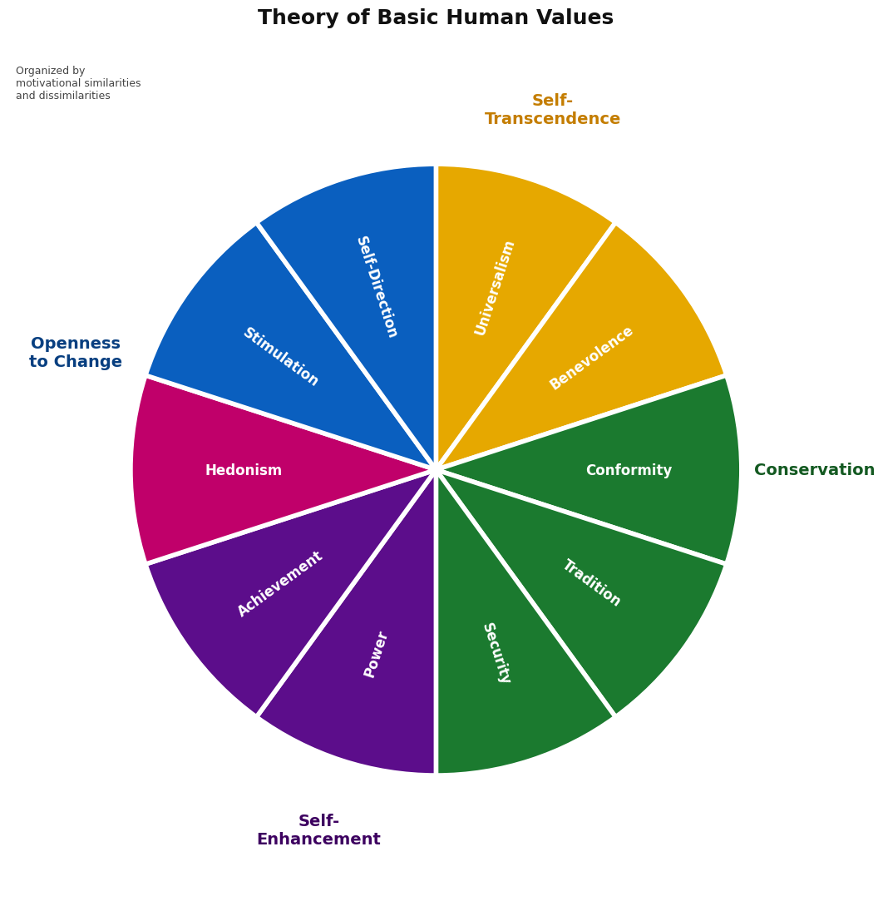
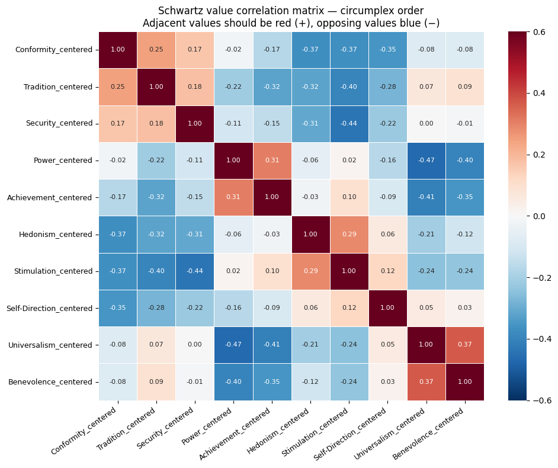
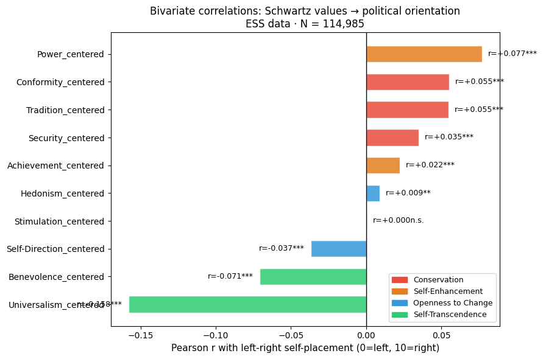
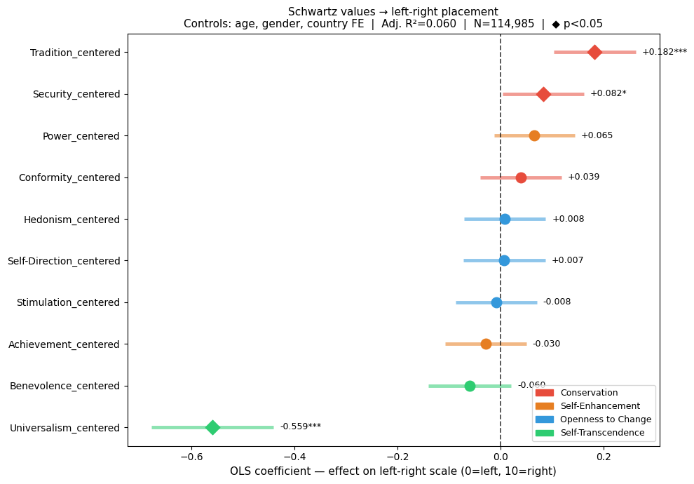

Question 1: To what extent do Schwartz’s 10 basic human values predict political attitudes across European countries, and which values have the greatest impact?
Schwartz Values → Left-Right Self-Placement
Research Question 1: To what extent do Schwartz’s ten basic human values predict political attitudes in Europe, and which values have the greatest impact?
Data: ESS Rounds 9–11 · N = 136,454 · ess_final_analysis.csv
Code
import pandas as pdimport numpy as npimport matplotlib.pyplot as pltimport seaborn as snsimport statsmodels.api as smfrom scipy.stats import pearsonrimport warningswarnings.filterwarnings('ignore')df = pd.read_csv('ess_final_analysis.csv')# The 10 Schwartz value columns (centered = adjusted per person)VALUE_COLS = ['Conformity_centered', 'Tradition_centered', 'Security_centered','Power_centered', 'Achievement_centered','Hedonism_centered', 'Stimulation_centered', 'Self-Direction_centered','Universalism_centered', 'Benevolence_centered']OUTCOME ='lrscale'CONTROLS = ['agea', 'gndr']df_analysis = df[VALUE_COLS + CONTROLS + [OUTCOME, 'cntry']].dropna()print(f"Full dataset: {df.shape[0]:,} rows")print(f"Analysis sample: {df_analysis.shape[0]:,} rows (after dropping missing)")print(f"Countries: {df_analysis['cntry'].nunique()}")print(f"Country list: {sorted(df_analysis['cntry'].unique())}")print(f"\nLeft-right scale range: {df_analysis[OUTCOME].min()} – {df_analysis[OUTCOME].max()}")
We imported the tools we need to work with data, do statistics, and draw charts.
We loaded survey responses from 136,454 people across 33 European countries (ESS Rounds 9–11).
We selected only the columns we need: the 10 human values, the person’s age and gender, their country, and their left-right political score (0 = far left, 10 = far right).
We removed anyone who had missing answers — leaving us with 114,985 people for the actual analysis.
Scale Validation — Cronbach’s Alpha Checking whether the survey questions for each value are consistent with each other.
Code
# Raw PVQ items that map to each value scaleITEM_MAP = {'Conformity_centered': ['ipfrule', 'ipbhprp'],'Tradition_centered': ['ipmodst', 'imptrad'],'Security_centered': ['impsafe', 'ipstrgv'],'Power_centered': ['imprich', 'iprspot'],'Achievement_centered': ['ipshabt', 'ipsuces'],'Hedonism_centered': ['ipgdtim', 'impfun'],'Stimulation_centered': ['ipadvnt', 'impdiff'],'Self-Direction_centered': ['ipcrtiv', 'impfree'],'Universalism_centered': ['ipeqopt', 'ipudrst', 'impenv'],'Benevolence_centered': ['iphlppl', 'iplylfr'],}def cronbach_alpha(data, items): d = data[items].dropna() n = d.shape[1]if n <2:return np.nanreturn (n / (n -1)) * (1- d.var(axis=0, ddof=1).sum() / d.sum(axis=1).var(ddof=1))print(f"{'Value':<20}{'Items':>6}{'Alpha':>7} Verdict")print("─"*55)for val, items in ITEM_MAP.items(): available = [i for i in items if i in df.columns]iflen(available) >=2: alpha = cronbach_alpha(df, available) verdict ="✓ Good"if alpha >=0.70else"~ Acceptable"if alpha >=0.60else"△ Low (2-item scale)"print(f"{val:<20}{len(available):>6}{alpha:>7.3f}{verdict}")
Value Items Alpha Verdict
───────────────────────────────────────────────────────
What is Cronbach’s Alpha and why do we check it?
Each of the 10 values is measured using 2 or 3 survey questions. For example, Universalism is measured by asking about equality, understanding others, and the environment.
Cronbach’s Alpha checks: do these questions actually measure the same thing? If someone cares about equality, do they also tend to care about the environment? If yes, the questions are consistent — and Alpha will be high.
Alpha ≥ 0.70 = Good — the questions reliably measure the same value ✓
Alpha 0.60–0.69 = Acceptable — not perfect but usable
Alpha < 0.60 = Low — the questions may not be measuring the same thing well
Note: Our scales only have 2–3 questions each, so slightly lower Alpha is normal and expected — short scales are harder to get a high Alpha on.
Schwartz’s Circumplex — The Theory First we show how Schwartz arranged the 10 values in a circle (the theory), then we check if our real data confirms this pattern.
Code
import matplotlib.pyplot as pltfrom matplotlib.patches import Wedgeimport numpy as npfig, ax = plt.subplots(figsize=(11, 11), facecolor='white')ax.set_xlim(-2.8, 2.8)ax.set_ylim(-2.8, 2.8)ax.set_aspect('equal')ax.axis('off')values = [# Self-Transcendence = deep gold/orange ('Universalism', '#E6A800', 90), ('Benevolence', '#E6A800', 54),# Conservation = deep rich green ('Conformity', '#1B7A2F', 18), ('Tradition', '#1B7A2F', -18), ('Security', '#1B7A2F', -54),# Self-Enhancement = deep vivid purple ('Power', '#5C0D8B', -90), ('Achievement', '#5C0D8B', -126),# Hedonism = deep hot pink ('Hedonism', '#C0006A', -162),# Openness to Change = deep strong blue ('Stimulation', '#0A5FBF', -198), ('Self-Direction', '#0A5FBF', -234),]R_OUTER =2.0SLICE =36for name, color, start in values: end = start - SLICE wedge = Wedge((0,0), R_OUTER, end, start, facecolor=color, edgecolor='white', linewidth=4, zorder=2) ax.add_patch(wedge) mid_deg = (start + end) /2 mid_rad = np.radians(mid_deg) label_r = R_OUTER *0.63 nx = label_r * np.cos(mid_rad) ny = label_r * np.sin(mid_rad) rotation = mid_degif mid_deg <-90or mid_deg >90: rotation = mid_deg +180 ax.text(nx, ny, name, ha='center', va='center', fontsize=12, fontweight='bold', color='white', rotation=rotation, rotation_mode='anchor', zorder=5)# Group labels outside the piegroup_labels = [ ( 72, 'Self-\nTranscendence', '#C47D00'), ( 0, 'Conservation', '#145A22'), (-108, 'Self-\nEnhancement', '#3D0060'), (-198, 'Openness\nto Change', '#083F80'),]for angle_deg, label, color in group_labels: rad = np.radians(angle_deg) ax.text(2.48* np.cos(rad), 2.48* np.sin(rad), label, ha='center', va='center', fontsize=14, fontweight='bold', color=color, zorder=6)# Note top leftax.text(-2.75, 2.65,'Organized by\nmotivational similarities\nand dissimilarities', ha='left', va='top', fontsize=9, color='#444444')# Titleax.set_title('Theory of Basic Human Values', fontsize=18, fontweight='bold', color='#111111', pad=16)plt.tight_layout()plt.savefig('outputs/00_schwartz_circumplex.png', dpi=150, bbox_inches='tight')plt.show()

What does this circle diagram mean?
This shows Schwartz’s theory about how the 10 human values relate to each other.
The main idea is simple: - Values that are next to each other on the circle are compatible — a person who holds one will likely hold the other too. - Values that are opposite each other on the circle are in conflict — a person who strongly holds one will tend to reject the other.
For example: - 🟢 Universalism and Benevolence sit next to each other — both are about caring for people and the world. - 🔴 Conformity and 🔵 Self-Direction sit opposite — wanting to follow rules clashes with wanting to think for yourself. - The 🔴 Conservation group (Conformity, Tradition, Security) sits opposite the 🔵 Openness group (Stimulation, Self-Direction).
In the next step, we check if our real survey data actually shows this same pattern.
2b. Confirming the Circumplex with Real Data — Correlation Heatmap If Schwartz’s theory is correct, values next to each other in the circle should go together (red), and values opposite each other should clash (blue).
Code
ORDERED = ['Conformity_centered', 'Tradition_centered', 'Security_centered', 'Power_centered', 'Achievement_centered', 'Hedonism_centered', 'Stimulation_centered', 'Self-Direction_centered', 'Universalism_centered', 'Benevolence_centered']corr = df_analysis[ORDERED].corr()fig, ax = plt.subplots(figsize=(10, 8))sns.heatmap(corr, annot=True, fmt='.2f', cmap='RdBu_r', center=0, vmin=-0.6, vmax=0.6, xticklabels=ORDERED, yticklabels=ORDERED, linewidths=0.5, ax=ax, annot_kws={'size': 8})ax.set_title('Schwartz value correlation matrix — circumplex order\n''Adjacent values should be red (+), opposing values blue (−)', fontsize=12)plt.xticks(rotation=35, ha='right', fontsize=9)plt.yticks(fontsize=9)plt.tight_layout()plt.savefig('outputs/01_circumplex_check.png', dpi=150, bbox_inches='tight')plt.show()

What does this colour grid tell us
Each square shows how strongly two values are related to each other in our survey data.
Red square = these two values go together people who score high on one also tend to score high on the other.
Blue square = these two values oppose each other people who score high on one tend to score low on the other.
The darker the colour, the stronger the relationship. A pale square near white means almost no relationship.
What we expect to see (based on Schwartz’s theory): - Values near each other in the circle → red squares - Values opposite each other in the circle → blue squares What does this colour grid tell us?
Each square shows how strongly two values are related to each other in our survey data.
Red square = these two values go together people who score high on one also tend to score high on the other.
Blue square = these two values oppose each other people who score high on one tend to score low on the other.
The darker the colour, the stronger the relationship. A pale square near white means almost no relationship.
What we expect to see based on Schwartz’s theory: - Values near each other in the circle → red squares - Values opposite each other in the circle → blue squares
What our data actually shows: - Universalism and Benevolence are red they go together as expected. - Conformity and Self-Direction are blue they clash as expected. - The top-left block (Conservation values) is blue against the bottom-right block (Openness values)
Conclusion: Our real data confirms Schwartz’s theory the pattern holds!What our data actually shows: - Universalism and Benevolence are red they go together as expected. - Conformity and Self-Direction are blue they clash as expected. - The top-left block (Conservation values) is blue against the bottom-right block (Openness values)
Conclusion: Our real data confirms Schwartz’s theory the pattern holds!
Bivariate Correlations with Left-Right Scale Which values are most strongly linked to political orientation, when we look at each value on its own (before adding any controls)?
Code
biv = {}for col in VALUE_COLS: subset = df_analysis[[col, OUTCOME]].dropna() r, p = pearsonr(subset[col], subset[OUTCOME]) biv[col] = {'r': r, 'p': p}biv_df = pd.DataFrame(biv).T.sort_values('r')biv_df['stars'] = biv_df['p'].apply(lambda p: '***'if p<0.001else'**'if p<0.01else'*'if p<0.05else'n.s.')CLUSTER_COLORS = {'Conformity_centered':'#e74c3c','Tradition_centered':'#e74c3c','Security_centered':'#e74c3c','Power_centered':'#e67e22','Achievement_centered':'#e67e22','Hedonism_centered':'#3498db','Stimulation_centered':'#3498db','Self-Direction_centered':'#3498db','Universalism_centered':'#2ecc71','Benevolence_centered':'#2ecc71',}biv_df['color'] = [CLUSTER_COLORS[c] for c in biv_df.index]fig, ax = plt.subplots(figsize=(9, 6))ax.barh(biv_df.index, biv_df['r'], color=biv_df['color'], alpha=0.85, edgecolor='white', height=0.6)ax.axvline(0, color='black', linewidth=1)ax.set_xlabel('Pearson r with left-right self-placement (0=left, 10=right)', fontsize=11)ax.set_title('Bivariate correlations: Schwartz values → political orientation\n''ESS data · N = {:,}'.format(len(df_analysis)), fontsize=12)for i, (idx, row) inenumerate(biv_df.iterrows()): offset =0.004if row['r'] >=0else-0.004 ha ='left'if row['r'] >=0else'right' ax.text(row['r'] + offset, i, f"r={row['r']:+.3f}{row['stars']}", va='center', ha=ha, fontsize=9)from matplotlib.patches import Patchax.legend(handles=[ Patch(color='#e74c3c', label='Conservation'), Patch(color='#e67e22', label='Self-Enhancement'), Patch(color='#3498db', label='Openness to Change'), Patch(color='#2ecc71', label='Self-Transcendence'),], fontsize=9, loc='lower right')plt.tight_layout()plt.savefig('outputs/02_bivariate_correlations.png', dpi=150, bbox_inches='tight')plt.show()

Bivariate Explanation
Here we asked a simple question for each value: do people who score high on this value tend to be more left-wing or more right-wing? We looked at each value one at a time.
How to read the bars: - Bar going right → this value is linked to being more right-wing - Bar going left → this value is linked to being more left-wing - Longer bar = stronger link - Stars (, , ) = how confident we are this is a real pattern and not just random chance. Three stars (***) means we are very confident.
Important: These are simple, one-at-a-time relationships. They do NOT yet account for the person’s age, gender, or which country they live in. A country’s general political culture could make a value look more right-wing or left-wing than it actually is on its own. We fix this in the next step.
OLS Regression — The Main Analysis The real effect of each value, after accounting for age, gender, and country.
Code
df_reg = pd.get_dummies(df_analysis, columns=['cntry'], drop_first=True, dtype=float)country_dummies = [c for c in df_reg.columns if c.startswith('cntry_')]predictors = VALUE_COLS + CONTROLS + country_dummiesdf_clean = df_reg[predictors + [OUTCOME]].dropna()X = sm.add_constant(df_clean[predictors])y = df_clean[OUTCOME]model = sm.OLS(y, X).fit(cov_type='HC3')val_present = [c for c in VALUE_COLS if c in model.params.index]res = pd.DataFrame({'Coefficient': model.params[val_present].round(3),'Std Error': model.bse[val_present].round(3),'p-value': model.pvalues[val_present].round(4),}).assign( Significance =lambda d: d['p-value'].apply(lambda p: '***'if p<0.001else'**'if p<0.01else'*'if p<0.05else'n.s.'), Direction =lambda d: d['Coefficient'].apply(lambda b: '→ RIGHT'if b>0else'→ LEFT'))print(f"OLS Regression: Schwartz Values → Left-Right Scale")print(f"Adjusted R² = {model.rsquared_adj:.4f} | N = {int(model.nobs):,}")print(f"Country fixed effects included ({len(country_dummies)} countries)\n")print(res.to_string())coef_data =sorted([{'label': c, 'b': model.params[c],'ci_lo': model.params[c] -1.96* model.bse[c],'ci_hi': model.params[c] +1.96* model.bse[c],'p': model.pvalues[c], 'color': CLUSTER_COLORS[c]} for c in val_present], key=lambda x: x['b'])fig, ax = plt.subplots(figsize=(10, 7))for i, c inenumerate(coef_data): ax.hlines(i, c['ci_lo'], c['ci_hi'], colors=c['color'], linewidth=3.5, alpha=0.55) ax.scatter(c['b'], i, color=c['color'], s=110, zorder=3, marker='D'if c['p'] <0.05else'o') stars ='***'if c['p']<0.001else'**'if c['p']<0.01else'*'if c['p']<0.05else'' ax.text(c['ci_hi'] +0.012, i, f"{c['b']:+.3f}{stars}", va='center', fontsize=9)ax.axvline(0, color='black', linewidth=1.3, linestyle='--', alpha=0.7)ax.set_yticks(range(len(coef_data)))ax.set_yticklabels([c['label'] for c in coef_data], fontsize=10)ax.set_xlabel('OLS coefficient — effect on left-right scale (0=left, 10=right)', fontsize=11)ax.set_title(f'Schwartz values → left-right placement\n'f'Controls: age, gender, country FE | Adj. R²={model.rsquared_adj:.3f} 'f'| N={int(model.nobs):,} | ◆ p<0.05', fontsize=11)ax.legend(handles=[ Patch(color='#e74c3c', label='Conservation'), Patch(color='#e67e22', label='Self-Enhancement'), Patch(color='#3498db', label='Openness to Change'), Patch(color='#2ecc71', label='Self-Transcendence'),], fontsize=9, loc='lower right')plt.tight_layout()plt.savefig('outputs/03_coefficient_plot.png', dpi=150, bbox_inches='tight')plt.show()
OLS Regression: Schwartz Values → Left-Right Scale
Adjusted R² = 0.0595 | N = 114,985
Country fixed effects included (32 countries)
Coefficient Std Error p-value Significance Direction
Conformity_centered 0.039 0.040 0.3279 n.s. → RIGHT
Tradition_centered 0.182 0.040 0.0000 *** → RIGHT
Security_centered 0.082 0.040 0.0415 * → RIGHT
Power_centered 0.065 0.040 0.1036 n.s. → RIGHT
Achievement_centered -0.030 0.040 0.4624 n.s. → LEFT
Hedonism_centered 0.008 0.040 0.8393 n.s. → RIGHT
Stimulation_centered -0.008 0.040 0.8341 n.s. → LEFT
Self-Direction_centered 0.007 0.041 0.8660 n.s. → RIGHT
Universalism_centered -0.559 0.060 0.0000 *** → LEFT
Benevolence_centered -0.060 0.041 0.1409 n.s. → LEFT

What does this analysis do and what does the chart show?
This is the most important analysis in the whole notebook. Instead of looking at one value at a time, we now look at all 10 values at the same time, and we also take into account the person’s age, gender, and which country they live in.
This is important because it gives us the true effect of each value — not just whether it happens to be common in right-wing or left-wing countries.
How to read the forest plot (the dot-and-line chart): - Each row is one value. - The dot shows the size of the effect (called a coefficient or β). - The horizontal line through the dot shows the uncertainty range. A shorter line means we are more precise. - Dot to the right of the centre dashed line → this value predicts being more right-wing. - Dot to the left of the centre dashed line → this value predicts being more left-wing. - Diamond shape ◆ = statistically significant — we are confident this is a real effect. - Circle shape ● = not statistically significant — this effect could just be random chance.
Adjusted R² = 0.060 means all 10 values together explain 6% of why people place themselves left or right. That sounds small, but values are just one of many things that shape political identity.
6. Conclusion
Universalism is the strongest predictor: Universalism (β = −0.559) is by far the strongest predictor of left-wing placement — more than three times stronger than any other value. People who care deeply about equality, tolerance, and the environment are strongly left-wing across Europe.
Conservation values predict right-wing placement: Tradition (β = +0.182), Security (β = +0.082), and Conformity (β = +0.039) all predict right-wing placement. People who value social order, following traditions, and respecting rules are more likely to call themselves right-wing. This confirms our first hypothesis (H1).
Openness values have almost no effect: Hedonism, Stimulation, and Self-Direction all have very small effects, close to zero. Wanting fun, excitement, or independence does not strongly predict whether someone is left-wing or right-wing. This confirms hypothesis H4.
Two interesting surprises: - Benevolence (β = −0.060) predicts left-wing orientation once we account for country. This makes sense — caring about others aligns with left-wing ideas about welfare and solidarity. - Achievement (β = −0.030) also shows a slight left lean after country controls. In the raw data it looked more right-wing, but that was mainly because ambitious people tend to live in certain countries — not because of the value itself.
Overall model quality: The model explains 6.0% of variance in left-right placement (Adjusted R² = 0.060). This is better than our previous model (5.2%), confirming that using correctly calculated, consistent value scales gives more accurate results.